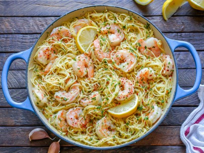

Description
I think you've heard me say this a bunch of times already, but one of my freezer staples is a bag of wild-caught shrimp.
Because shrimp thaw fast and cook even more quickly, they're easy to use in last-minute to top a big farro salad or to
turn into a meal like a garlic shrimp with bell peppers or even a pan of shrimp and rice
Ingredients
- 1 pound angel hair pasta
- 2 tablespoons olive oil
- 1 pound large shrimp, peeled and deveined
- 4 cloves garlic, minced
- 1/2 teaspoon red pepper flakes
- 1 lemon, juiced, plus 1/2 lemon, zested
- 1/2 cup dry white wine
- 5 tablespoons butter
- 1/4 cup chopped parsley leaves
Steps
- Prepare and marinate the shrimp. Pat the shrimp dry and toss them with salt, half of the garlic, and some olive oil. Set aside for 15 minutes.
- Cook the shrimp. Cook the shrimp in the olive oil for 1 to 1 ½ minutes on each side,
until it just begins to turn pink (it's totally fine if there is some still grey
remaining, it will finish cooking later). Remove from the skillet and set aside.
- Make the scampi sauce. Briefly cook the remaining garlic and red pepper flakes, then add the wine and lemon juice.
Cook until reduced by ½, then add the butter.
- Add the shrimp. Add the shrimp back to the pan and toss to coat. Allow to warm through and for any grey shrimp to turn pink.
As soon as that happens, immediately remove the pan from the heat.
- Serve Immediately! Garnish with parsley and additional red pepper flakes if desired, and serve right away!